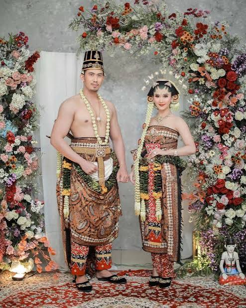
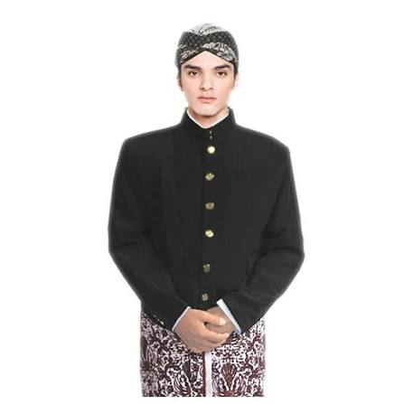
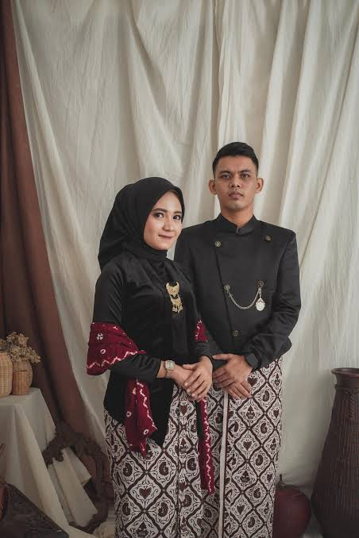
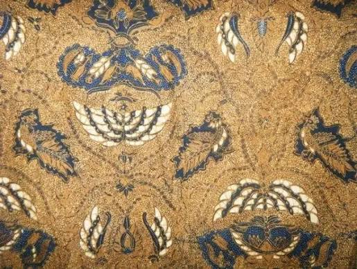

Melestarikan Warisan Budaya
Keindahan budaya yang sarat makna dan nilai luhur, terus menjadi warisan dari generasi ke generasi.
Pelajari Lebih LanjutBaju adat Jawa Tengah merupakan salah satu warisan budaya Indonesia yang mencerminkan identitas, tata krama, kesederhanaan, dan filosofi kehidupan masyarakat Jawa.
Pakaian adat Jawa Tengah tidak hanya berfungsi sebagai pakaian tradisional, tetapi juga memiliki nilai budaya dan makna filosofis yang mendalam.
Setiap bagian dari pakaian memiliki ciri khas tersendiri, mulai dari kain batik, beskap, kebaya, blangkon, hingga berbagai aksesoris tradisional.
Pakaian adat Jawa Tengah memiliki perbedaan antara pakaian pria dan wanita, namun keduanya tetap memiliki nilai budaya yang kuat.
Beberapa gambaran keindahan pakaian adat Jawa Tengah.




Pakaian adat Jawa Tengah tidak hanya indah, tetapi juga mengandung filosofi kehidupan.
Dalam budaya Jawa, pakaian adat tidak sekedar berfungsi sebagai penutup tubuh atau perhiasan visual, melainkan media penyampai nilai moral, norma, dan pandangan hidup (filosofi). Filosofi ini berakar pada prinsip keselarasan, kesederhanaan, dan pengendalian diri.
Identitas pada pakian adat adalah penanda atau lambang yang menunjukan siapa pemakainya, posisi sosialnya, serta asal usul budayanya. Pakaian adat bertindak sebagai "bahasa visual" yang menyampaikan status, peran, dan jati diri seseorang tanpa perlu diucapkan.
Nilai luhur dalam pakaian adat Jawa Tengah adalah prinsip-prinsip kebaikan, etika, dan ajaran moral tertinggi yang diwariskan oleh leluhur dan diintegrasikan ke dalan wujud serta cara berpakaian. Jika filosofi adalah makna/konsep pemikirannya, dan identitas adalah tanda pengenalnya, maka nilai luhur adalah pedoman karakter dan moral yang ingin ditanamkan kepada pemakainya.
Warisan budaya (cultural heritage) adalah peninggalan bernilai tinggi baik berupa fisik maupun non fisik yang diwariskan secara turun temurun dari generasi leluhur untuk dijaga, dilestarikan, dan diteruskan ke generasi mendatang.
Jika ingin memberikan kritik atau saran, silakan hubungi kami melalui informasi berikut.